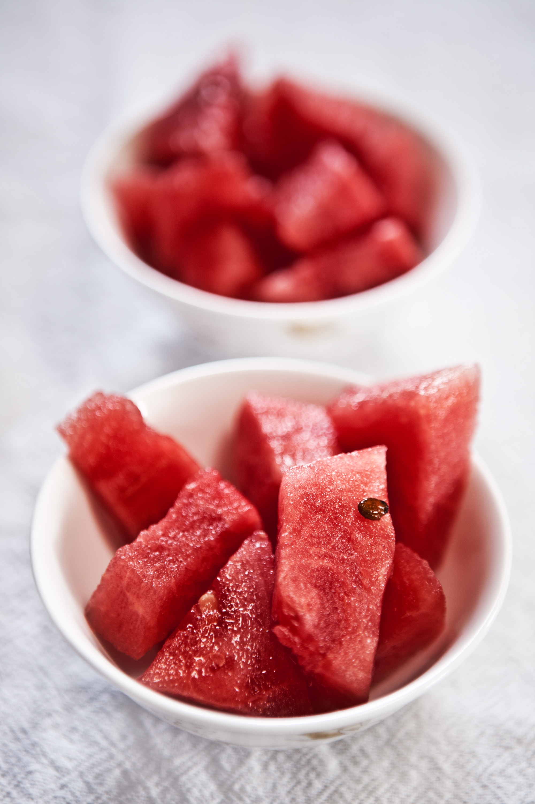

WATERMELONS ARE BOTH A FRUIT AND A VEGETABLE. Thanks to their sweet taste, watermelons are most commonly considered a fruit. And they do grow like fruit, originating from flowers that have been pollinated by bees, and, from a botanical perspective, they're fruits because they contain seeds. But many gardeners think of them as vegetables, since they grow them in their gardens alongside other summer veggies like peas and corn. Not to mention, watermelon is classified as part of a botanical family of gourds that includes other culinary vegetables like cucumber, squash, and pumpkin.
if you live in warmer climes, you can sow seeds directly outdoors, but wait until the soil temperature warms to at least 70°F to avoid poor germination. Watermelon vines are very tender and should not be transplanted until all danger of frost has passed. (To be safe, wait at least two weeks past your last frost date.) If you are in a cooler zone, start seeds indoors about a month before transplanting. Amend soil with aged manure, seaweed, and/or compost before planting. Watermelons are heavy feeders. Learn more about soil amendments and preparing soil for planting. Watermelons prefer a soil pH between 6 and 6.8. Growing the vines in raised rows, known as hills, ensures good drainage and will hold the sun’s heat longer. Space the plants about 2 feet apart in a 5-foot-wide hill.